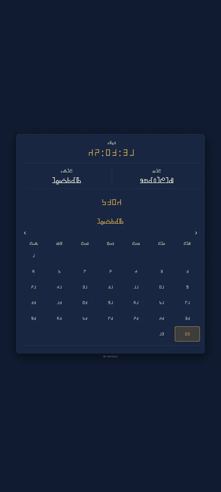
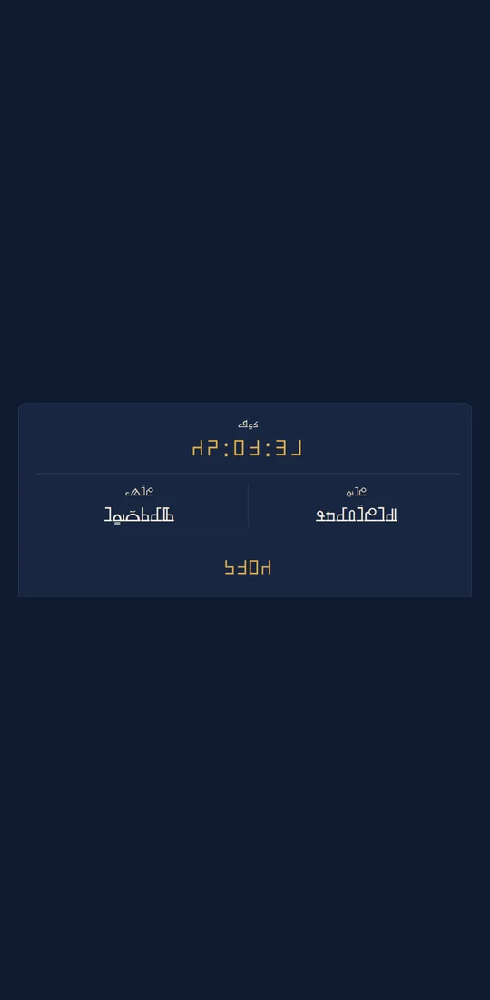
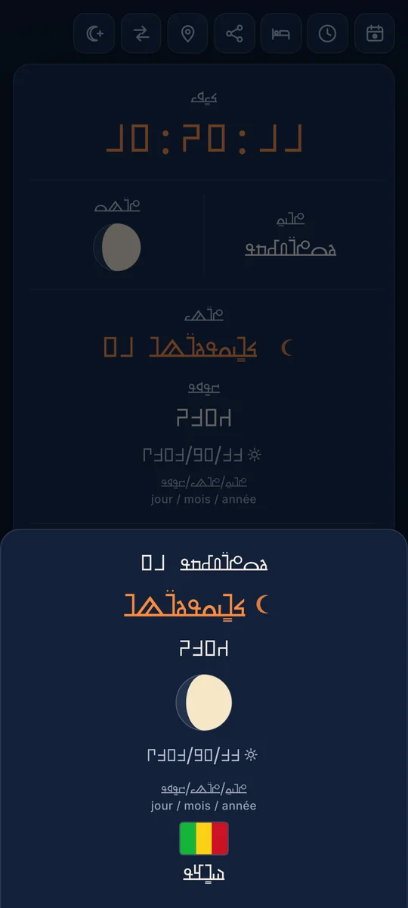
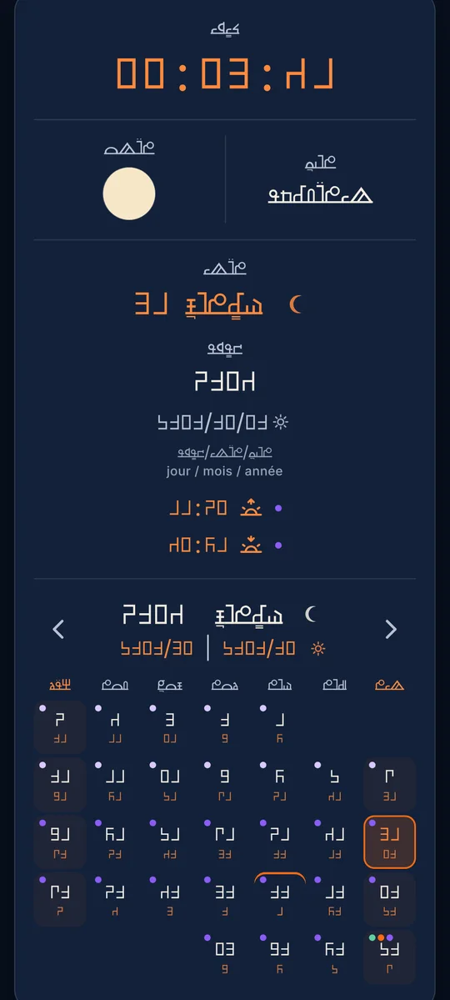
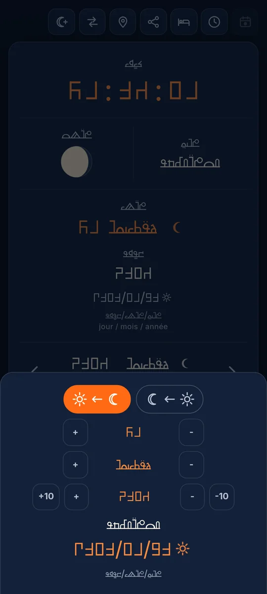
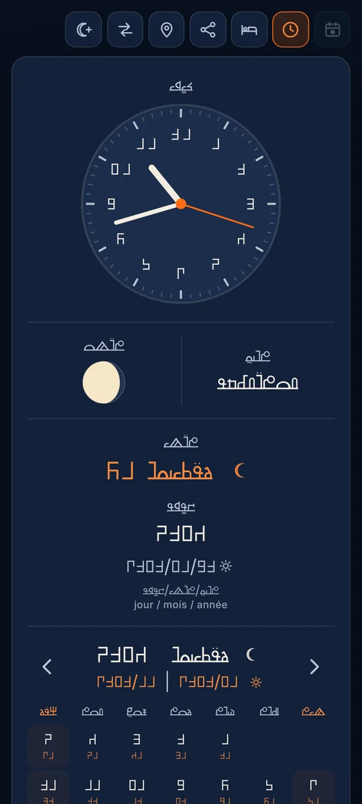
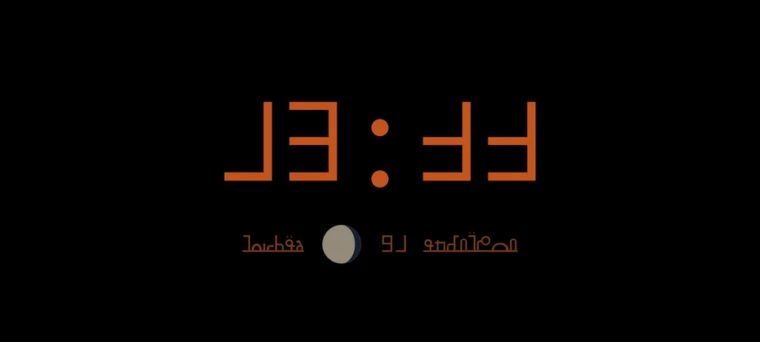
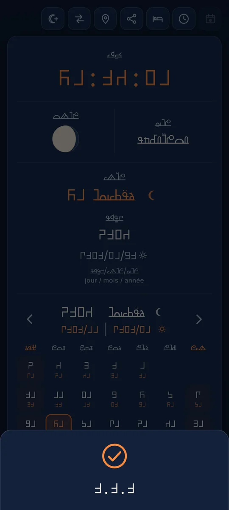
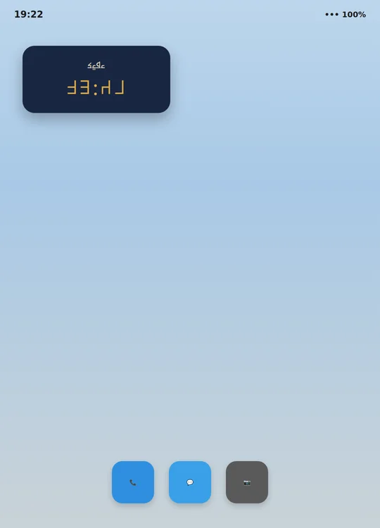

AYNEHA Horloge
L'heure, le jour, le mois et l'année songhay en AYNEHA, avec un calendrier.
Télécharger l'application (3,3 Mo)
Version 2.2.2 - fichier APK pour Android
AYNEHA Horloge affiche le temps en AYNEHA : l'heure, le jour, la lune, la date du calendrier lunaire songhay et la date grégorienne. Le calendrier lunaire est calé sur la vraie lune et le jour lunaire change au coucher du soleil, là où vous êtes.
Ce qu'elle fait
- L'heure en direct, en chiffres AYNEHA, avec un cadran à aiguilles au choix
- Le calendrier lunaire songhay : les 12 mois et les 7 jours en AYNEHA, la semaine du samedi au vendredi, chaque mois commençant avec le croissant de lune
- La date lunaire au format songhay (mois, puis jour) avec une petite lune, et la date grégorienne au format européen avec un petit soleil
- Les fêtes : indépendances des pays où vivent des communautés songhay, fêtes officielles du Mali, fêtes religieuses, et chaque jour du Ramadan avec les heures de fin du sahur et de rupture du jeûne
- Un convertisseur de dates grégorien - songhay, dans les deux sens
- Une veilleuse plein écran pour la nuit et le partage de la date en image
- Deux widgets pour l'écran d'accueil : l'heure, et l'heure avec la lune et la date lunaire
- Mise à jour depuis ayneha.org : tirez l'écran vers le bas pour vérifier s'il existe une nouvelle version
Comment l'utiliser
- Ouvrez l'application pour voir l'heure et le calendrier ; touchez un jour pour voir sa date complète.
- Pour un widget : appui long sur l'écran d'accueil, « Widgets », puis « AYNEHA Horloge ».
- Pour la mise à jour : tirez l'écran vers le bas, puis touchez le bouton orange si une nouvelle version est proposée.
Captures d'écran
Touchez une capture pour l'agrandir.

















